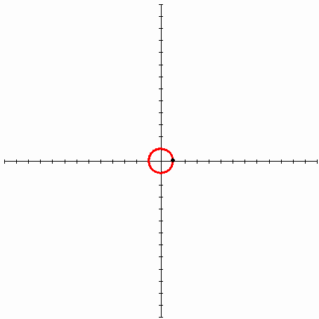

| Egy görbe evolvense egy sima görbe, melyet úgy kapunk, hogy a görbére felcsévélünk egy fonalat, majd mindig feszesen tartva lecsévéljük róla. Végpontjának pályája a görbe evolvensét írja le. Az evolvens olyan ruletta, amelynél a legördülő elem egyenes, melynek egy adott pontja generálja az evolvenst. |
| A Körevolvens:A kör evolvense egy spirális görbe. | |
| |
 |